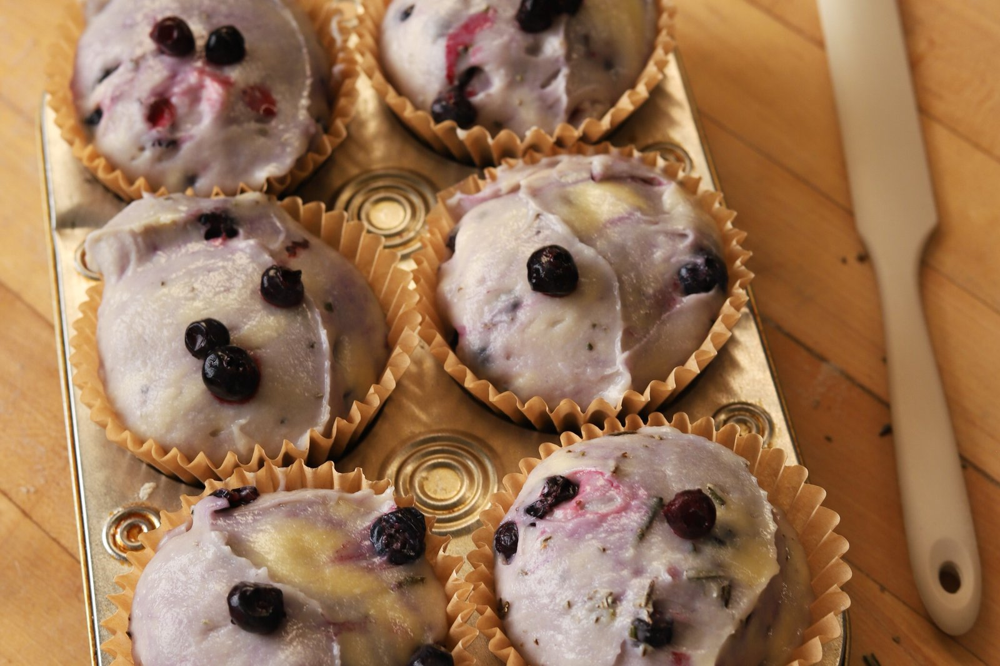

Everything I know about baking in 90 seconds
Every rule I actually follow, in one place — measuring, butter, leavening, flavor, gluten-free, and how to know when it's done. No fluff.

I've been baking for over 20 years. People ask me for my "secret," but there isn't one — there's a stack of small rules that add up. Here's the whole stack. Bookmark this one.
Measuring & mixing
- Bake by weight, never by volume. A cup of flour is a guess. A gram is a fact. Get a scale.
- When the flour disappears, stop mixing. That's your signal. Past that point you're building toughness, not batter.
- Don't bake same-day batter — use second-day batter. Let it rest overnight. The flour hydrates, the flavor deepens, and the bake is more even.
- Room-temperature ingredients always work better. Cold eggs and cold butter fight you. Let them come up first.
Butter & fat
- Never use unsalted butter. Salt is flavor. Salted butter is the default in my kitchen.
- Butter temperature is texture. Cold butter gives you flaky. Softened gives you tender. Melted gives you chewy. Pick your texture, then pick your butter.
- Brown your butter and your nuts. Two minutes of extra color is a huge amount of extra flavor.
Leavening
- Baking soda needs an acid to do its job — buttermilk, vinegar, brown sugar, cocoa. Baking powder works all by itself. Know which one your recipe is leaning on.
Flavor
- Salt and vinegar enhance all flavors. A little acid and a little salt make everything else taste more like itself.
- Bloom your cocoa powder and your cinnamon. Wake them up in something warm before they go in. Deeper, rounder flavor for free.
The science, in one line each
If you only remember one thing, remember this: sugar is moisture, protein and starch are structure, and fat is texture. Every recipe is just those four levers. Once you feel that, you can fix almost anything.
Gluten-free
- Psyllium husk is your gluten. It's the binder that gives gluten-free dough stretch and hold. It's the difference between a brick and a bake.
- Hydrate your batters overnight — this matters for everyone, but for gluten-free it's non-negotiable. The flours need time to drink.
Temperature & doneness
- 350°F is the best starting point for any bake. When in doubt, start there.
- Cookies bake hotter — over 375°F. More heat, faster set, better edges.
- Use an internal thermometer for doneness, not the toothpick. The toothpick lies. Temperature doesn't.
And the last one
When it's all said and done — slow down and enjoy what you're doing. That's the part that actually shows up in the food.
That's everything, in order. Save it, screenshot it, come back to it. And if you want the recipes that put these rules to work, they're all over the blog.